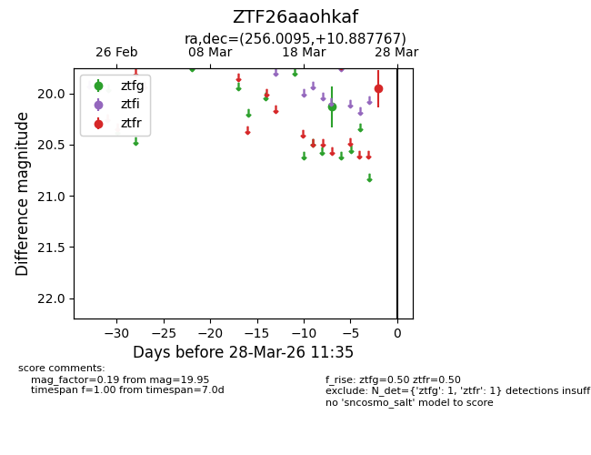
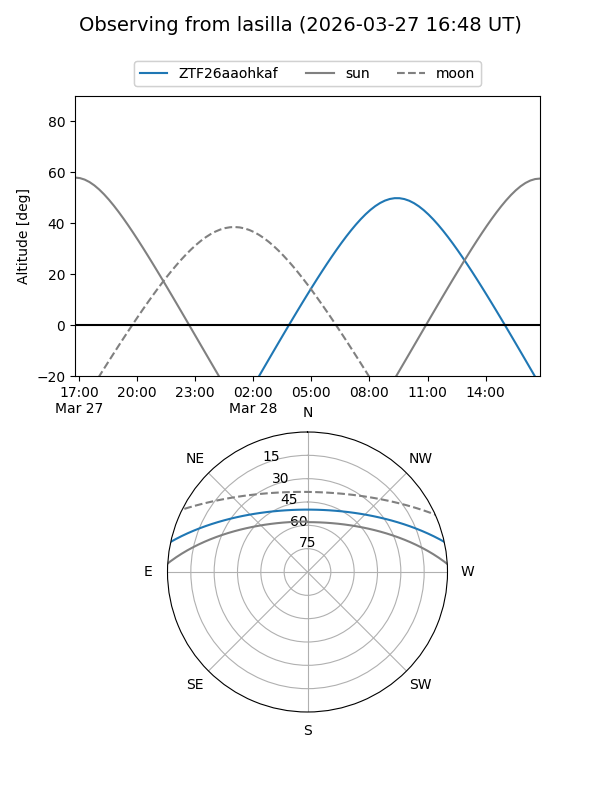
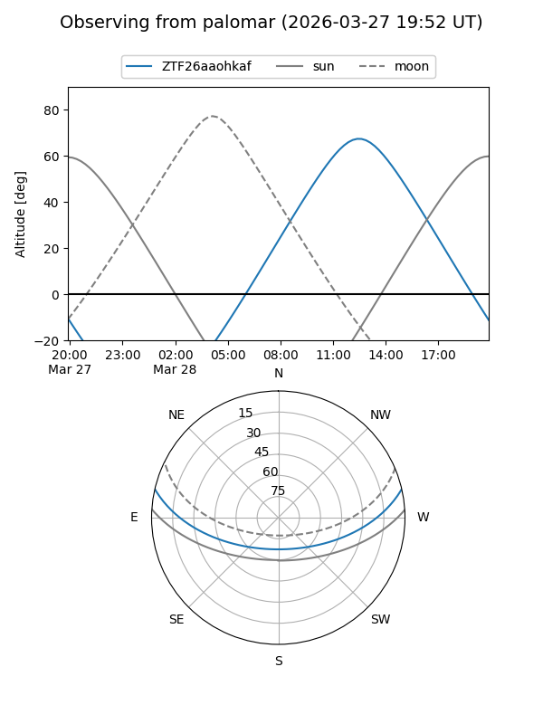

ZTF26aaohkaf
Target ZTF26aaohkaf at 2026-03-28 11:38
Aliases and brokers:
FINK: link
Lasair: link
ALeRCE: link
alt names
ZTF26aaohkaf (ztf,fink_ztf)
Coordinates:
equatorial (ra, dec) = 256.0095,+10.88777
equatorial (HMS+DMS) = 17:04:02.29,+10:53:15.96
galactic (l, b) = (30.7008,+28.74165)
Flags:
Photometry:
last ztfg=20.13, ztfr=19.95
1 ztfg, 1 ztfr detections
Lightcurve

Visibility


Additional plots